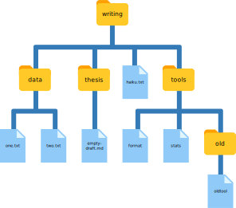

7 파일, 텍스트, 폴더 찾기
“구글(Google)”을 “검색”을 의미하는 동사로 많은 분들이 사용하는 것처럼 유닉스 프로그래머는 “grep”을 동일하게 사용한다. grep은 “global/regular expression/print(전역/정규표현식/출력)”의 축약어로 초기 유닉스 편집기에서 일반적인 일련의 연산작업을 뜻한다. 매우 유용한 명령-라인 프로그램 이름이기도 하다.
7.1 grep 명령어
grep은 패턴과 매칭되는 파일의 행을 찾아 화면에 뿌려준다. 예제 파일로, Salon 잡지 1988년 경쟁부문에서 하이쿠(haiku, 일본의 전통 단시) 3개를 담고 있는 파일을 사용례로 활용할 것이다. 이 예제 파일을 갖는 “writing” 하위 디렉토리에서 작업을 할 것이다:
$ cd
$ cd Desktop/data-shell/writing
$ cat haiku.txt
The Tao that is seen
Is not the true Tao, until
You bring fresh toner.
With searching comes loss
and the presence of absence:
"My Thesis" not found.
Yesterday it worked
Today it is not working
Software is like that.원본 하이쿠에 링크를 걸지 않았는데 이유는 Salon 사이트에 더 이상 보이는 것 같지 않아서다. Jeff Rothenberg가 말했듯이, “디지털 정보는 어느 것이 먼저 오든 영원한 영속성을 가지거나 혹은 5년이다.” 운이 좋은 경우 인기 콘텐트는 종종 백업된다. [@marwick2018packaging] [@boettiger2015introduction]
단어 “not”을 포함하는 행을 찾아 봅시다.
$ grep not haiku.txt
Is not the true Tao, until
"My Thesis" not found
Today it is not working여기서 not이 찾고자 하는 패턴이다. grep 명령어는 파일을 뒤져 지정된 패턴과 매칭되는 것을 찾아낸다. 명령어를 사용하려면 grep을 타이핑하고 나서, 찾고자 하는 패턴을 지정하고 나서 검색하고자 하는 파일명(혹은 파일 다수)를 지정하면 된다.
출력값으로 “not”을 포함하는 파일에 행이 3개 있다.
다른 패턴을 시도해 보자. 이번에는 “The”이다.
$ grep The haiku.txt
The Tao that is seen
"My Thesis" not found.이번에는 문자 “The”를 포함한 행이 두줄 출력되었다. 하지만, 더 큰 단어 안에 포함된 단어(“Thesis”)도 함께 출력된다.
grep명령어에 -w 옵션을 주면, 단어 경계로 매칭을 제한해서, “day” 단어만을 가진 행만이 화면에 출력된다.
매칭을 “The” 단어 자체만 포함하는 행만 매칭시키려면, grep명령어에 -w 옵션을 주게 되면, 단어 경계로 매칭을 제한시킨다.
$ grep -w The haiku.txt
The Tao that is seen“단어 경계”는 행의 시작과 끝이 포함됨에 주의한다. 그래서 공백으로 감싼 단어는 해당사항이 없게 된다. 때때로, 단어 하나가 아닌, 문구를 찾고자 하는 경우도 있다. 인용부호 내부에 문구를 넣어 grep으로 작업하는 것이 편하다.
$ grep -w "is not" haiku.txt
Today it is not working지금까지 단일 단어 주위를 인용부호로 감쌀 필요가 없다는 것을 알고 있다. 하지만, 단어 다수를 검색할 때 인용부호를 사용하는 것이 유용하다. 이렇게 하면, 검색어(term) 혹은 검색 문구(phrase)와 검색 대상이 되는 파일 사이를 더 쉽게 구별하는데 도움을 준다. 나머지 예제에서는 인용부호를 사용한다.
또다른 유용한 옵션은 -n으로, 매칭되는 행에 번호를 붙여 출력한다.
$ grep -n "it" haiku.txt
5:With searching comes loss
9:Yesterday it worked
10:Today it is not working상기에서 5, 9, 10번째 행이 문자 ’it’를 포함함을 확인할 수 있다.
다른 유닉스 명령어와 마찬자기로 옵션(즉, 플래그)을 조합할 수 있다. 단어 “the”를 포함하는 행을 찾아보자. “the”를 포함하는 행을 찾는 -w 옵션과 매칭되는 행에 번호를 붙이는 -n을 조합할 수 있다:
$ grep -n -w "the" haiku.txt
2:Is not the true Tao, until
6:and the presence of absence:이제 -i 옵션을 사용해서 대소분자 구분없이 매칭한다.
$ grep -n -w -i "the" haiku.txt
1:The Tao that is seen
2:Is not the true Tao, until
6:and the presence of absence:이제, -v 옵션을 사용해서 뒤집어서 역으로 매칭을 한다. 즉, 단어 “the”를 포함하지 않는 행을 출력결과로 한다.
$ grep -n -w -v "the" haiku.txt
1:The Tao that is seen
3:You bring fresh toner.
4:
5:With searching comes loss
7:"My Thesis" not found.
8:
9:Yesterday it worked
10:Today it is not working
11:Software is like that.grep 명령어는 옵션이 많다. grep 명령어에 대한 도움을 찾으려면, 다음 명령어를 타이핑한다.
$ grep --help
Usage: grep [OPTION]... PATTERN [FILE]...
Search for PATTERN in each FILE or standard input.
PATTERN is, by default, a basic regular expression (BRE).
Example: grep -i 'hello world' menu.h main.c
Regexp selection and interpretation:
-E, --extended-regexp PATTERN is an extended regular expression (ERE)
-F, --fixed-strings PATTERN is a set of newline-separated fixed strings
-G, --basic-regexp PATTERN is a basic regular expression (BRE)
-P, --perl-regexp PATTERN is a Perl regular expression
-e, --regexp=PATTERN use PATTERN for matching
-f, --file=FILE obtain PATTERN from FILE
-i, --ignore-case ignore case distinctions
-w, --word-regexp force PATTERN to match only whole words
-x, --line-regexp force PATTERN to match only whole lines
-z, --null-data a data line ends in 0 byte, not newline
Miscellaneous:
... ... ...예제 7.1 (grep 사용) 다음 중 어떤 명령어가 다음 결과를 만들어낼까요?
and the presence of absence:grep "of" haiku.txtgrep -E "of" haiku.txtgrep -w "of" haiku.txtgrep -i "of" haiku.txt
정답은 3번. -w 플래그는 온전한 단어만 매칭되는 것을 찾기 때문이다.
grep의 진정한 힘은 옵션에서 나오지 않고; 패턴에 와일드카드를 포함할 수 있다는 사실에서 나온다. (기술적 명칭은 정규 표현식(regular expressions)이고, “grep” 명령어의 “re”가 정규표현식을 나타낸다.) 정규 표현식은 복잡하기도 하지만 강력하기도 하다. 복잡한 검색을 하고자 한다면, 소프트웨어 카펜트리 웹사이트에서 정규표현식을 참고한다. 맛보기로, 다음과 같이 두번째 위치에 ’o’를 포함한 행을 찾을 수 있다:
$ grep -E '^.o' haiku.txt
You bring fresh toner.
Today it is not working
Software is like that.-E 플래그를 사용해서 인용부호 안에 패턴을 넣어서 쉘이 해석하는 것을 방지한다. (예를 들어, 패턴에 ‘*’이 포함된다면, grep을 실행되기 전에 쉘이 먼저 전개하려 할 것이다.) 패턴에서’^‘은 행의 시작에 매칭을 고정시키는 역할을 한다.’.’은 한 문자만 매칭하고(쉘의 ’?’과 마찬가지로), ’o’는 실제 영문 ’o’와 매칭된다.
예제 7.2 (개체(species) 추적하기) 정훈이는 한 디렉토리에 수백개 데이터 파일이 있는데, 형태는 다음과 같다:
2013-11-05,deer,5
2013-11-05,rabbit,22
2013-11-05,raccoon,7
2013-11-06,rabbit,19
2013-11-06,deer,2명령라인에서 첫번째 인자로 개체(species), 두번째 인자로 디렉토리를 인자로 받는 쉘스크립트를 작성하고자 한다. 스크립트는 일자별로 관측된 개체수를 담아 species.txt 라는 파일로 저장하면 된다.
2013-11-05,22
2013-11-06,19스크립트를 작성하는데 다음에 나온 명령어를 적절한 순서로 파이프에 연결시키면 된다:
cut -d : -f 2
>
|
grep -w $1 -r $2
|
$1.txt
cut -d , -f 1,3 힌트: man grep 명령어를 사용해서 디렉토리에서 재귀적으로 텍스트를 grep하는지 찾아본다. man cut 명령어를 사용해서 한줄에 필드 하나 이상을 선택하는 방법을 살펴본다. data-shell/data/animal-counts/animals.txt 파일이 예제 파일로 제공되고 있다:
grep -w $1 -r $2 | cut -d : -f 2 | cut -d , -f 1,3 > $1.txt상기 쉘 스크립트를 다음과 같이 호출하면 된다:
$ bash count-species.sh bear .예제 7.3 (작은 아낙네) Louisa May Alcott가 지은 작은 아낙네(Little Women)를 친구과 함께 읽고 논쟁중이다. 책에는 Jo, Meg, Beth, Amy 네자매가 나온다. 친구가 Jo가 가장 많이 언급되었다고 생각한다. 하지만, 나는 Amy라고 확신한다. 운좋게도, 소설의 전체 텍스트를 담고 있는 LittleWomen.txt 파일이 있다(data-shell/writing/data/LittleWomen.txt). for 루프를 사용해서, 네자매 각각이 얼마나 언급되었는지 횟수를 개수할 수 있을까?
힌트: 한가지 해결책은 grep, wc, | 명령어를 동원하는 것이지만, 다른 해결책으로 grep 옵션을 활용하는 것도 있다.
프로그래밍 문제를 푸는 방식은 한가지 이상 존재한다. 따라서, 올바른 결과를 도출해야 하고, 우아하고(elegance), 가독성이 좋고(readability), 속도(speed)를 다 함께 고려하여 선택한다.
for sis in Jo Meg Beth Amy
do
echo $sis:
grep -ow $sis LittleWomen.txt | wc -l
done또다른 해법으로, 다소 떨어지는 해답은 다음과 같다:
for sis in Jo Meg Beth Amy
do
echo $sis:
grep -ocw $sis LittleWomen.txt
done이 해답이 다소 뒤떨어지는 이유는 grep -c는 매칭되는 행 숫자만 출력하기 때문이다. 행마다 매칭되는 것이 하나 이상 되는 경우, 이 방법으로 매칭되는 전체 갯수는 낮아질 수 있기 때문이다.
7.2 find 명령어
grep이 파일의 행을 찾는 반면에, find 명령어는 파일 자체를 검색한다. 다시, find 명령어는 정말 옵션이 많다; 가장 간단한 것이 어떻게 동작하는지 시연하기 위해, 다음과 같은 디렉토리 구조를 사용할 것이다.

find 찾기 예제 파일 구조Nelle의 writing 디렉토리는 haiku.txt로 불리는 파일 하나와, 하위 디렉토리 4개를 포함한다. thesis 디렉토리는 슬프게고 아무것도 담겨있지 않는 빈 파일 empty-draft.md만 있고, data 디렉토리는 LittleWomen.txt, one.txt과 two.txt 총 파일 3개를 포함하고, tools 디렉토리는 format과 stats 프로그램을 포함하고, oldtool 파일을 담고 있는 old 하위 디렉토리로 구성되어 있다.
첫 명령어로, find .을 실행하자.
$ find .
.
./data
./data/one.txt
./data/LittleWomen.txt
./data/two.txt
./tools
./tools/format
./tools/old
./tools/old/oldtool
./tools/stats
./haiku.txt
./thesis
./thesis/empty-draft.md항상 그렇듯이, . 자체가 의미하는 바는 현재 작업 디렉토리로, 검색을 시작하는 디렉토리가 된다. find 출력결과로 현재 작업 디렉토리 아래 있는 모든 파일, 그리고 디렉토리명이 나온다. 출력결과가 쓸모없어 보이지만, find 명령어에 선택옵션이 많아서 출력결과를 필터할 수 있다. 이번 학습에서는 그중 일부만 다뤄볼 것이다.
첫번째 선택옵션은 -type d로 “디렉토리인 것들”을 의미한다. 아니나 다를까, find의 출력에는 (.을 포함해서) 디렉토리 5개가 나온다.
$ find . -type d
./
./data
./thesis
./tools
./tools/oldfind 명령어가 찾는 객체가 특별한 순서를 갖고 출력되는 것이 아님에 주목한다. -type d에서 -type f로 옵션을 변경하면, 대신에 모든 파일 목록이 나온다.
$ find . -type f
./haiku.txt
./tools/stats
./tools/old/oldtool
./tools/format
./thesis/empty-draft.md
./data/one.txt
./data/LittleWomen.txt
./data/two.txt이제 이름으로 매칭을 하자:
$ find . -name *.txt
./haiku.txt모든 텍스트 파일을 찾기를 기대하지만, 단지 ./haiku.txt만을 화면에 출력한다. 문제는 명령문을 실행하기 전에, *같은 와일드카드 문자를 쉘이 전개하는 것이다. 현재 디렉토리에서 *.txt을 전개하면 haiku.txt이 되기 때문에, 실제 실행하는 명령어는 다음과 같다.
$ find . -name haiku.txtfind 명령어는 사용자가 요청한 것만 수행한다; 사용자는 방금전에 잘못된 것을 요청했다.
사용자가 원하는 것을 얻기 위해서, grep을 가지고 작업했던 것을 수행하자. 단일 인용부호에 *.txt을 넣어서 쉘이 와일드카드 *을 전개하지 못하게 한다. 이런 방식으로, find 명령어는 확장된 파일명 haiku.txt이 아닌, 실제로 *.txt 패턴을 얻는다:
$ find . -name '*.txt'
./data/one.txt
./data/LittleWomen.txt
./data/two.txt
./haiku.txt올바른 옵션이 주어진 상태에서, ls와 find 명령어를 사용해서 비슷한 작업을 수행하도록 만들 수 있다. 하지만, 정상 상태에서 ls는 가능한 모든 것을 목록으로 출력하는 반면에, find는 어떤 특성을 가진 것을 검색하고 보여준다는 점에서 차이가 난다.
7.3 조합의 힘
앞에서 언급했듯이, 명령-라인(command-line)의 힘은 도구를 조합하는데 있다. 파이프로 어떻게 조합하는지를 살펴봤으니, 또 다른 기술을 찾아보자. 방금 보았듯이, find . -name '*.txt' 명령어는 현재 디렉토리 및 하위 디렉토리에 있는 모든 텍스트 파일 목록을 보여준다. 어떻게 하면 wc -l 명령어와 조합해서 모든 파일의 행을 개수할 수 있을까?
가장 간단한 방법은 $() 내부에 find 명령어를 위치시키는 것이다.
$ wc -l $(find . -name '*.txt')
11 ./haiku.txt
300 ./data/two.txt
21022 ./data/LittleWomen.txt
70 ./data/one.txt
21403 total쉘이 상기 명령어를 실행할 때, 처음 수행하는 것은 $() 내부를 무엇이든 실행시키는 것이다. 그리고 나서 $() 표현식을 명령어의 출력 결과로 대체한다. find의 출력 결과가 파일 이름 4개, 즉, ./data/one.txt, ./data/LittleWomen.txt, ./data/two.txt, ./haiku.txt라서, 쉘은 다음과 같이 명령문을 구성하게 된다:
$ wc -l ./data/one.txt ./data/LittleWomen.txt ./data/two.txt ./haiku.txt상기 명령문이 사용자가 원하는 것이다. 이러한 확장이 *과 ? 같은 와일드카드로 확장할 때, 정확하게 쉘이 수행하는 것이다. 하지만 자신의 “와일드카드”로 사용자가 원하는 임의 명령어를 사용해보자.
find와 grep을 함께 사용하는 것이 일반적이다. 먼저 find가 패턴을 매칭하는 파일을 찾고; 둘째로 grep이 또 다른 패턴과 매칭되는 파일 내부 행을 찾는다. 예제로 다음에 현재 부모 디렉토리에서 모든 .pdb 파일에 “FE” 문자열을 검색해서, 철(FE) 원자를 포함하는 PDB파일을 찾을 찾을 수 있다:
$ grep "FE" $(find .. -name '*.pdb')
../data/pdb/heme.pdb:ATOM 25 FE 1 -0.924 0.535 -0.518예제 7.4 (매칭후 빼내기) grep 명령어의 -v 옵션은 패턴 매칭을 반전시킨다. 패턴과 매칭하지 않는 행만 출력시킨다. 다음 명령어 중에서 어느 것이 \(\detokenize{/data}\) 폴더에 s.txt로 끝나는 (예로, animals.txt 혹은 planets.txt), 하지만 net 단어는 포함하지 않게 모든 파일을 찾아낼까요? 정답을 생각해냈다면, data-shell 디렉토리에서 다음 명령어를 시도해본다.
find data -name '*s.txt' | grep -v netfind data -name *s.txt | grep -v netgrep -v "temp" $(find data -name '*s.txt')- 위에 해당하지 않습니다.
정답은 1. 매칭 표현식을 인용부호로 감싸서 쉘이 전개하는 것을 방지시킨 상태로 find 명령어에 전개시킨다.
2번은 틀렸는데, 이유는 쉘이 find 명령어에 와일드카드를 전달하는 대신에 *s.txt 을 전개하기 때문이다.
3번은 틀렸는데, 이유는 파일명을 찾는 대신에 “temp”와 매칭되지 않는 행을 갖는 파일을 검색하기 때문이다.
텍스트 파일에 존재하는 것을 찾는 것에만 배타적으로 집중했다. 데이터가 만약 이미지로, 데이터베이스로, 혹은 다른 형식으로 저장되어 있다면 어떨까? 한가지 선택사항은 grep 같은 툴을 확장해서 텍스트가 아닌 형식도 다루게 한다. 이 접근법은 발생하지도 않았고, 아마도 그러지 않을 것이다. 왜냐하면 지원할 형식이 너무나도 많은 존재하기 때문이다.
두번째 선택지는 데이터를 텍스트로 변환하거나, 데이터에서 텍스트같은 비트를 추출하는 것이다. 아마도 가장 흔한 접근법이 (정보를 추출하기 위해서) 각 데이터 형식마다 도구 하나만 개발하면 되기 때문이다. 한편으로, 이 접근법은 간단한 것을 쉽게 할 수 있게 한다. 부정적인 면으로 보면, 복잡한 것은 일반적으로 불가능하다.
예를 들어, grep을 이리 저리 사용해서 이미지 파일에서 X와 Y 크기를 추출하는 프로그램을 작성하기는 쉽다. 하지만, 공식을 담고 있는 엑셀 같은 스프레드쉬트 셀에서 값을 찾아내는 것을 어떻게 작성할까? 세번째 선택지는 쉘과 텍스트 처리가 모두 한계를 가지고 있다는 것을 인지하고, 대신에 (R 혹은 파이썬 같은) 프로그램 언어를 사용하는 것이다. 이러한 시점이 왔을 때 쉘에서 너무 고생하지 마세요: R 혹은 파이썬을 포함한 많은 프로그래밍 언어가 많은 아이디어를 여기에서 가져왔다. 모방은 또한 칭찬의 가장 충심어린 형태이기도 하다.
유닉스 쉘은 지금 사용하는 대부분의 사람보다 나이가 많다. 그토록 오랫동안 생존한 이유는 지금까지 만들어진 가장 생산성이 높은 프로그래밍 환경 중 하나 혹은 아마도 가장 생산성 높은 프로그래밍 환경이기 때문이다. 구문이 암호스러울 수도 있지만, 숙달한 사람은 다양한 명령어를 대화하듯이 실험하고 나서, 본인 작업을 자동화하는데 학습한 것을 사용한다. 그래픽 사용자 인터페이스(GUI)가 처음에는 더 좋을 수 있지만, 여전히 쉘이 최강이다.
화이트헤드(Alfred North Whitehead) 박사가 1911년 썼듯이 “문명은 생각없이 수행할 수 있는 중요한 작업의 수를 확장함으로써 발전한다. (Civilization advances by extending the number of important operations which we can perform without thinking about them.)”
예제 7.5 (find 파이프라인 독해 능력) 다음 쉘 스크립트에 대해서 어떤 작업을 수행하는지 짧은 설명문을 작성하세요.
$ wc -l $(find . -name '*.dat') | sort -n}- 현재 디렉토리에서 .dat 확장자를 갖는 모든 파일을 찾아내시오.
- 파일 각각이 담고 있는 행을 개수한다.
- 앞선 단계에서 나온 출력결과를 숫자로 인식해서 정렬시킨다.
예제 7.6 (다른 특성을 갖는 파일 찾아내기) find 명령어에 “test”로 알려진 다른 기준을 제시해서 특정 속성을 갖는 파일을 지정할 수 있다. 예를 들어, 파일 생성시간, 파일 크기, 파일권한, 파일소유를 확인한다. man find 명령어를 사용해서 이를 살펴보고 나서, 지난 24시간 이내 ahmed 사용자가 변경시킨 모든 파일을 찾는 명령어를 작성한다.
- 힌트:
-type,-mtime,-user플래그 세개를 모두 사용해야 한다. - 힌트:
-mtime값을 음수를 지정해야 된다 — 왜일까?
Nelle의 홈이 작업 디렉토리라고 가정하고, 다음 명령어를 타이핑한다:
$ find ./ -type f -mtime -1 -user ahmed텍스트 파일 행수 계산
shell-lesson-data/exercise-data 디렉토리에 포함된 텍스트 파일 (.txt)를 찾아 파일의 크기를 추정할 수 있는 행수를 계산하는 쉘 스크립트를 작성해보자.
프롬프트: shell-lesson-data/exercise-data 디렉토리로 이동한 후 텍스트 파일 (.txt)을 찾아 행수를 계산하고 파일별 행수를 내림차순으로 정렬해 주세요.
$ sgpt -s "shell-lesson-data/exercise-data 디렉토리로 이동한 후 텍스트 파일 (.txt)을 찾아 행수를 계산하고 파일별 행수를 내림차순으로 정렬해 주세요."
cd shell-lesson-data/exercise-data && find . -name "*.txt" | xargs wc -l | sort -nr
[E]xecute, [D]escribe, [A]bort: D
This command changes the current directory to "shell-lesson-data/exercise-data", finds all files with the extension ".txt", counts the number of lines in each file, and sorts the results in descending order.
[E]xecute, [D]escribe, [A]bort: E
21038 total
21022 ./writing/LittleWomen.txt
11 ./writing/haiku.txt
5 ./numbers.txt
0 ./writing/thesis.txt
0 ./writing/thesis/thesis.txt
0 ./writing/backup/thesis.txt챗GPT가 프롬프트로 작성한 유닉스 쉘 명령어를 해석하면 다음과 같다.
현재 디렉터리를 “shell-lesson-data/exercise-data”로 변경하고, 확장자가 “.txt”인 모든 파일을 찾고, 각 파일의 줄 수를 세고, 결과를 내림차순으로 정렬한다.
바로 실행시키게 되면 find 명령어로 .txt 확장자를 갖는 파일을 모두 찾고 이를 xgars 입력을 받아 파일별 행수를 계산하고 sort 명령어로 내림차순 정렬한다.
파일 내부 매칭되는 텍스트 추출
shell-lesson-data/exercise-data/alkanes 디렉토리에 담긴 파일 확장자는 *.pdb로 단백질 데이터 정보가 디지털로 담겨있다. 이 중 methane 텍스트가 존재하는 파일과 해당 줄을 출력한다.
프롬프트: shell-lesson-data/exercise-data/alkanes 디렉토리로 이동한 후 단백질 데이터 파일 (.pdb)에서 대소문자 구분하지 말고 methane 단어가 포함된 파일과 해당 행을 출력해주세요.
$ sgpt -s "shell-lesson-data/exercise-data/alkanes 디렉토리로 이동한 후 단백질 데이터 파일 (.pdb)에서 대소문자 구분하지 말고 methane 단어가 포함된 파일과 해당 행을 출력해주세요"
cd shell-lesson-data/exercise-data/alkanes && grep -i "methane" *.pdb
[E]xecute, [D]escribe, [A]bort: D
This command changes the directory to "shell-lesson-data/exercise-data/alkanes" and searches for the word "methane" in all files with the .pdb extension.
[E]xecute, [D]escribe, [A]bort: E
methane.pdb:COMPND METHANE챗GPT가 프롬프트로 작성한 유닉스 쉘 명령어를 해석하면 다음과 같다.
“shell-lesson-data/exercise-data/alkanes”로 변경하고 확장자가 .pdb인 모든 파일에서 “methane”이라는 단어를 검색한다.
바로 실행시키게 되면 .pdb 확장자를 갖는 단백질 파일을 찾고 grep 명령어로 “methane” 텍스트가 담긴 파일과 행을 찾아 화면에 출력한다.